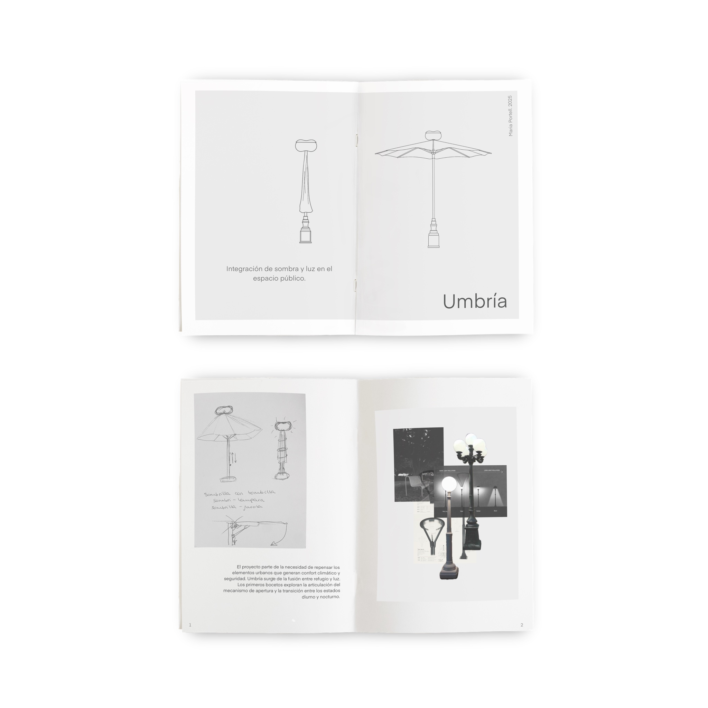
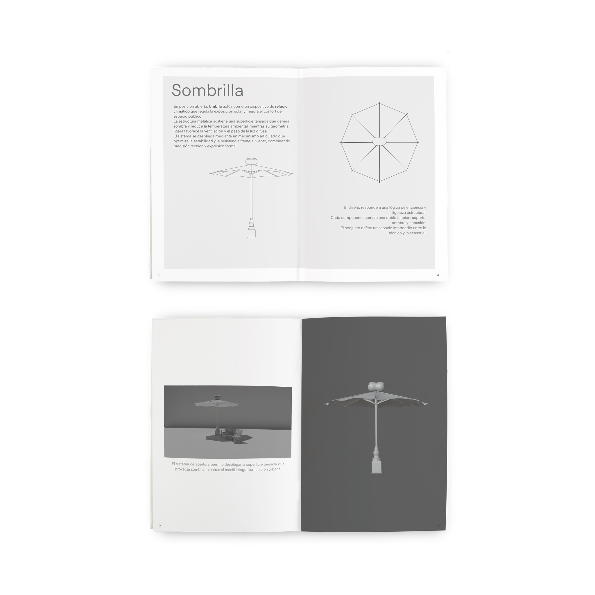
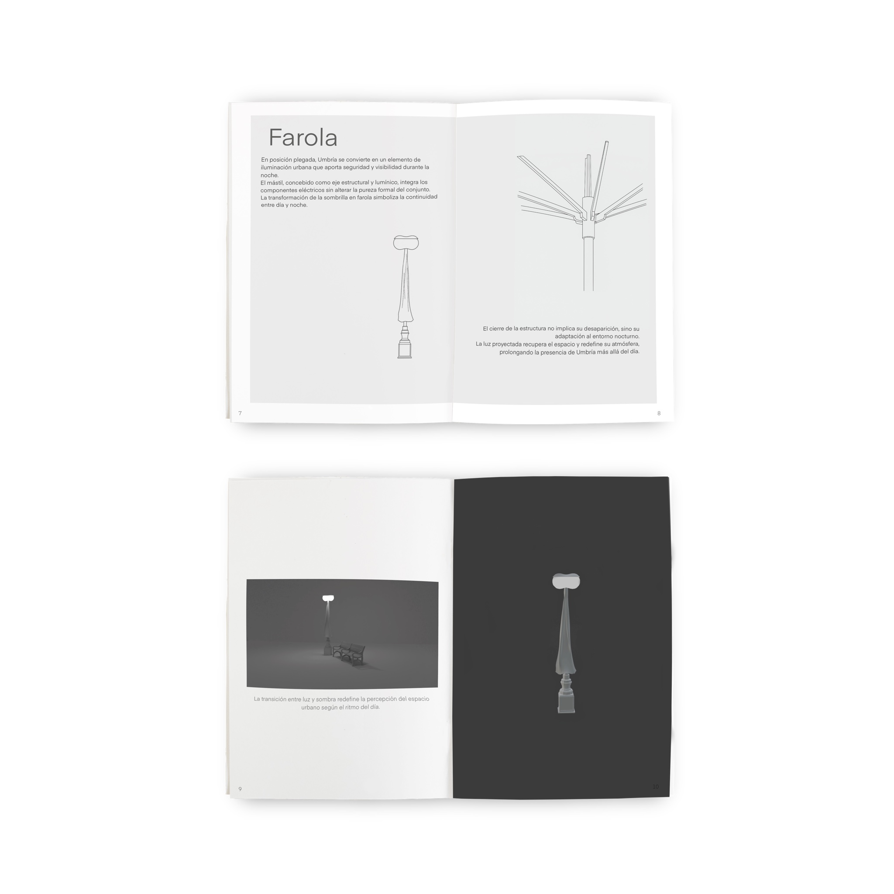

Umbría
Product Design · Creative Direction · Urban Design · Concept Development
Umbría es un proyecto de diseño de producto que replantea los elementos del espacio público destinados a aportar confort y seguridad.
La idea surgió tras mi primer verano en Madrid, entre el calor, la falta de sombra y la necesidad de repensar cómo habitamos el espacio exterior.
Umbría combina refugio y luz en una única pieza: actúa como sombrilla durante el día y como farola durante la noche, adaptándose al ritmo natural de la ciudad. Su diseño modular integra estructura, tecnología y atmósfera para generar una transición fluida entre sombra y claridad.


